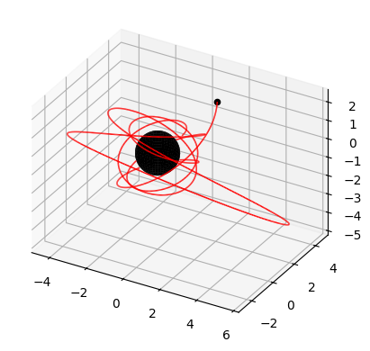
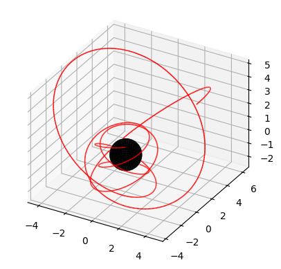
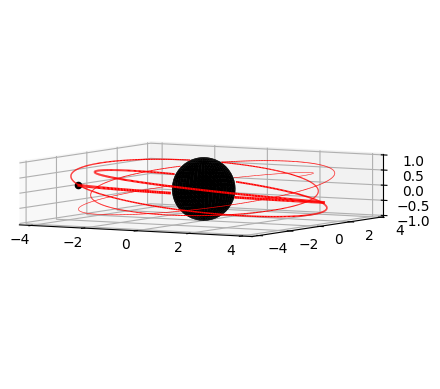
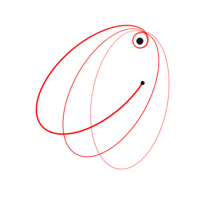
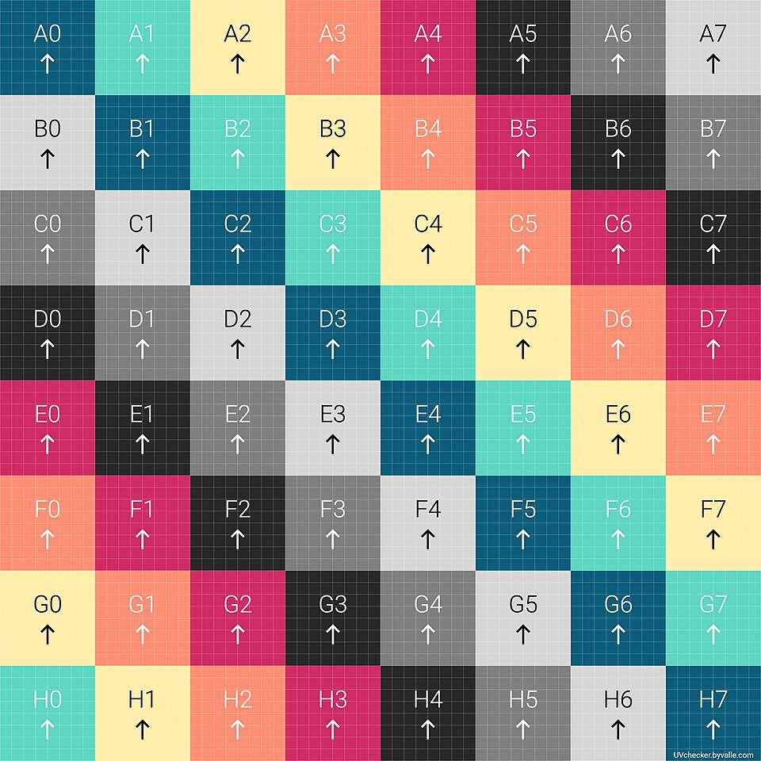
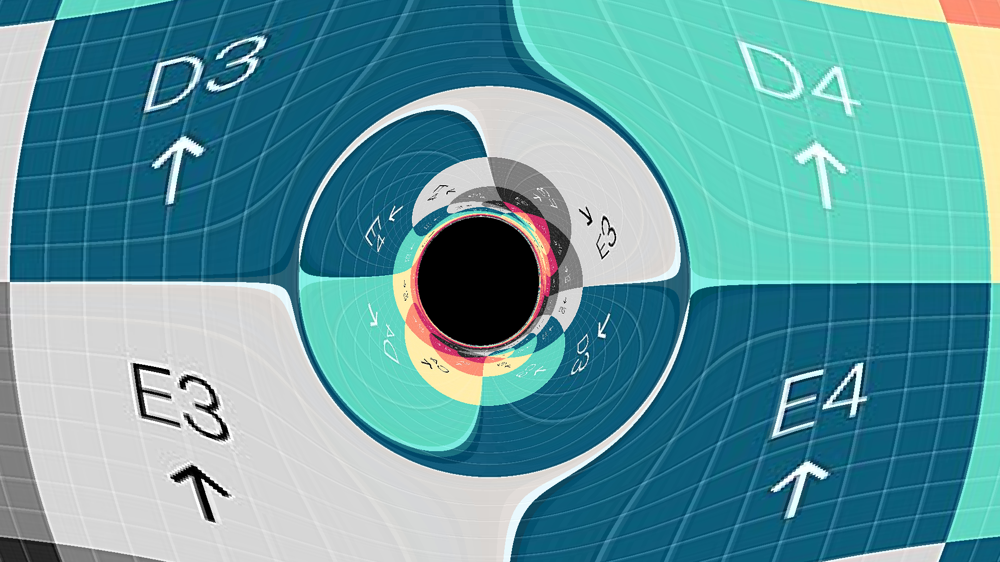
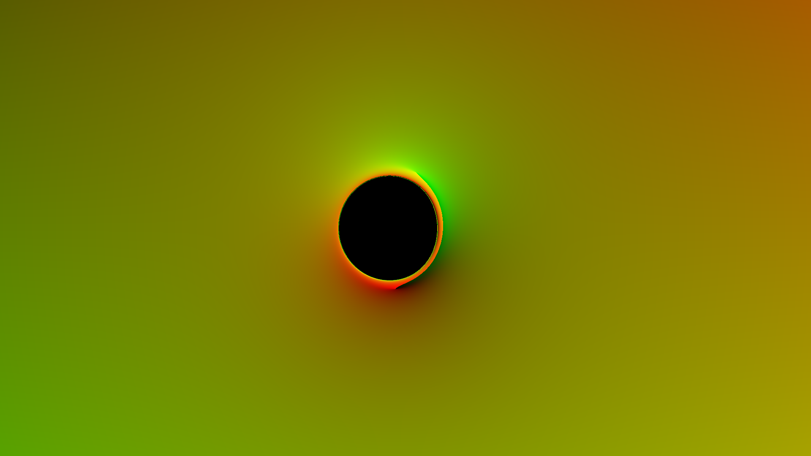

Graphics#
Plots#
To plot an orbit, simply use the plot() method and pass in the starting and ending Mino time.
import kerrgeopy as kg
from math import pi, cos
orbit = kg.StableOrbit(0.998,3,0.6,cos(pi/4))
fig, ax = orbit.plot(0,10)

Use the initial_phases option to set the initial phases \((q_{t_0},q_{r_0},q_{\theta_0},q_{\phi_0})\) of the trajectory. For example, set \(q_{r_0} = \pi\) to start the orbit from \(r_{\text{max}}\).
fig, ax = orbit.plot(0,10, initial_phases=(0,pi,0,0))

Use the elevation and azimuth options to set the viewing angles as defined by matplotlib. To plot the orbit with a decaying tail, use the tau option to set the time constant in units of Mino time for the exponential decay in the linewidth of the tail. Use lw to adjust the initial linewidth.
orbit = kg.StableOrbit(0.999,4,0.1,cos(pi/20))
fig, ax = orbit.plot(0,10, elevation=5, lw=2, tau=5)

The grid and axes options can be used to turn off the visibility of the grid and axes.
orbit = kg.StableOrbit(0.999,4,0.9,cos(0))
fig, ax = orbit.plot(0,10, elevation=90, azimuth=0, grid=False, axes=False, lw=2, tau=5)

Animations#
To animate an orbit, use the animate() method by passing in a filename to save the animation to, along with a starting and ending Mino time. Note that this method requires ffmpeg to be installed and may take several minutes to run depending on the length of the animation.
orbit = kg.StableOrbit(0.998,3,0.6,cos(pi/4))
orbit.animate("animation1.mp4",0,10)
All of the options available when plotting are also available within the animate() method. It is also possible to control the motion of the camera by passing in functions to set the azimuth and elevation angle in degrees as a function of Mino time.
from math import sin
orbit = kg.StableOrbit(0.998,2.1,0.8,cos(pi/20))
orbit.animate("animation2.mp4",0,20,
elevation_pan = lambda x: 10*sin(2*pi*x/20),
azimuthal_pan = lambda x: 360*x/20)
Use the background_color option to change the background color of the animation. If necesssary, use plt.style.use('dark_background') or with plt.style.context('dark_background'): to change the color of the grid and axes to white.
import matplotlib.pyplot as plt
orbit = kg.StableOrbit(0.999,4,0.1,cos(pi/20))
with plt.style.context('dark_background'):
orbit.animate("animation3.mp4",0,10, background_color="black", elevation=10)
Similar to elevation_pan and azimuthal_pan, roll can be used to set the roll angle of the camera as a function of Mino time.
from math import exp
orbit = kg.StableOrbit(0.999,3,0.1,cos(pi/20))
orbit.animate("animation4.mp4",
elevation_pan = lambda x: 180*x/10,
roll = lambda x: 180/(1+exp(10-2*x)),
)
The primary black hole is always placed in the center of the plot, so the axis limits are symmetric about the origin and are the same along all three axes. To zoom in and out of the orbit, use the axis_limit option to set the axis limit as a function of Mino time. Set plot_components to True in order to plot each of the individual components of the trajectory alongside the orbit itself.
orbit = kg.StableOrbit(0.998,2.1,0.8,cos(pi/20))
t, r, theta, phi = orbit.trajectory()
with plt.style.context('dark_background'):
orbit.animate("animation5.mp4",0,30,
elevation = 10,
azimuthal_pan = lambda x: 360*x/20,
axis_limit = lambda x: r(x)+1,
plot_components=True,
grid=False,
background_color="black"
)
Shadow of the Black Hole#
Using the KerrImage class, we can generate images of the black hole.
First, create the image and compute the data
from kerrgeopy import KerrImage
img = KerrImage(0.9, pi/3, (1920, 1080), 40)
img.compute()
The image (including generated data) can be saved with the save() method and loaded with the from_file() method
with open("img.json", "w+") as fp:
img.save(fp)
with open("img.json", "r") as fp:
img = KerrImage.from_file(fp)
Using the image() method, we can obtain the distorted image of the provided spheremap as a PIL.Image
from PIL import Image
# image from https://sci.esa.int/s/ApPJaGA
bg = Image.open("skymap.jpg")
bg

img.image(bg=bg)

# image from https://commons.wikimedia.org/wiki/File:UV_checker_Map_byValle.jpg
uv = Image.open("uv.jpg")
uv

img.image(bg=uv)

If we don’t pass any image for the background, we get a colormap
img.image()

The class also has the orbit() method that can create an orbiting animation
img.orbit("orbit.mp4", 10, bg=bg, size=(1280, 720))